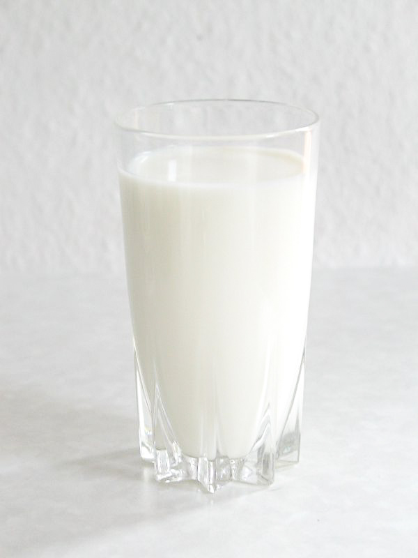

Healthy Foods - Dairy
What are the healthier dairy products?
* Low-fat or fat-free milk, cheese, and yogurt more healthy to you and can help you keep in shape.
If you don't want to gain extra fat and weight, consuming law-fat products will be a perfect idea.
But don't refuse to drink milk or eat cheese and yogurt even when you are having a diet. They not only provide you fat ( Good Fat ) , but have calcium which make your body stronger.
